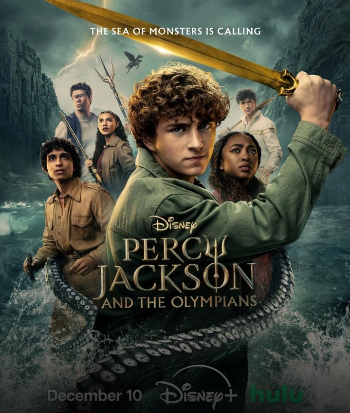

Fantasy
Harry Potter
(2001–2011) is a fantasy film saga about an orphaned boy who discovers he is a wizard and leaves his cruel relatives to attend Hogwarts, where he learns magic and fights dark forces.
Fantasy
(2001–2011) is a fantasy film saga about an orphaned boy who discovers he is a wizard and leaves his cruel relatives to attend Hogwarts, where he learns magic and fights dark forces.

Fantasy
(2010) is a fantasy adventure film about a teen who discovers he is a demigod son of Poseidon and must navigate a secret world of Greek mythology to prevent a war among the gods.

Fantasy
(1986) is a whimsical musical fantasy about Mildred Hubble, a clumsy student at a witch academy. Despite her constant magical mishaps and a ruthless school bully, Mildred must save the school when a sinister plot threatens it before Halloween.
Upon entering the magical world, Harry Potter learns that his parents were murdered by the dark wizard Lord Voldemort, who mysteriously vanished after failing to kill infant Harry, leaving the boy with a lightning-shaped scar. Alongside his best friends Ron Weasley and Hermione Granger, Harry navigates the dangers of growing up at Hogwarts while Voldemort slowly rises back to power and gathers his loyal Death Eaters. As the magical world plunges into a brutal wizarding war, Harry discovers that he is destiny's "Chosen One" and must hunt down Voldemort's Horcruxes—magical objects containing pieces of the Dark Lord's soul. This quest ultimately culminates in an epic final battle at Hogwarts, where Harry sacrifices himself to destroy the final piece of Voldemort's soul within him, returns to life, and defeats the Dark Lord once and for all to restore peace.
After being falsely accused by Zeus of stealing his master lightning bolt, sixteen-year-old Percy Jackson is taken to Camp Half-Blood—a secret training sanctuary for demigods—where he learns his true heritage as a son of Poseidon. When Hades kidnaps Percy's mother to trade her for the missing bolt, Percy sneaks out of camp accompanied by his satyr protector Grover and Athena's warrior daughter Annabeth on a cross-country quest to rescue her from the Underworld. Along their journey, they battle mythological monsters like Medusa and the Hydra to collect magical pearls that will secure their escape. Upon reaching the Underworld, Percy discovers that the rogue demigod Luke Castellan hid the bolt inside his shield to frame him, prompting Percy to defeat Luke in a fierce battle atop New York City, return the bolt to Zeus on Mount Olympus just in time, and successfully clear his father's name.
Mildred Hubble (Fairuza Balk) is widely considered the absolute "worst witch" at Miss Cackle’s Academy for Witches because she constantly fails her spells, crashes her broomstick, and ruins potions. Her life is made even more difficult by her strict deputy headmistress, Miss Hardbroom (Diana Rigg), and the relentless bullying of her snobbish classmate, Ethel Hallow (Anna Kipling), who ultimately sabotages Mildred’s broomstick performance ahead of a grand Halloween assembly. Feeling hopeless after a disastrous, public embarrassment in front of the revered Grand Wizard (Tim Curry), Mildred decides to run away from school into the surrounding forest. There, she accidentally uncovers a secret plot orchestrated by Agatha Cackle (Charlotte Rae), the evil twin sister of the school's kind headmistress, who plans to infiltrate the academy, turn everyone into toads, and take over. Armed with this critical knowledge, Mildred returns to the school, successfully uses her magic to foil Agatha's wicked group, saves the academy, and is honored as a true hero by the Grand Wizard and her fellow classmates.